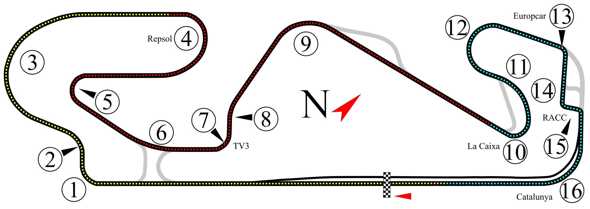

Trazado del Circuit de Barcelona-Catalunya
Inaugurado en 1991 con motivo de los Juegos Olímpicos de Barcelona 1992, el circuito de Montmeló es uno de los trazados más conocidos por los ingenieros de automovilismo. Su trazado actual cuenta con 14 curvas tras la supresión de la antigua chicane del tercer sector, recuperando el flujo veloz original hacia la recta de meta.
